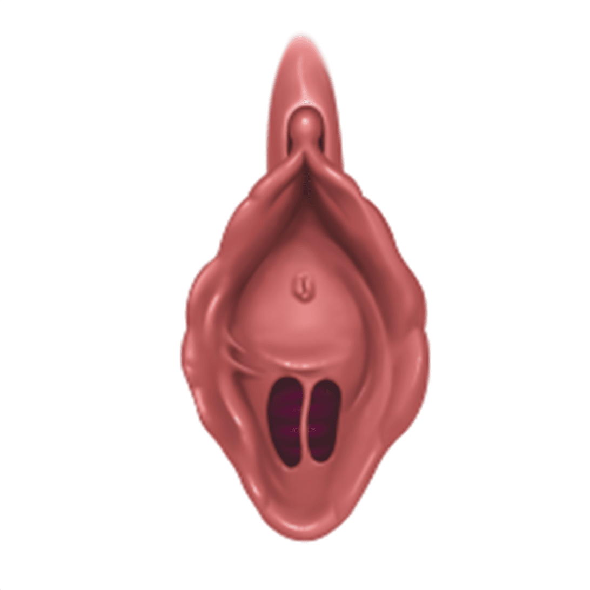
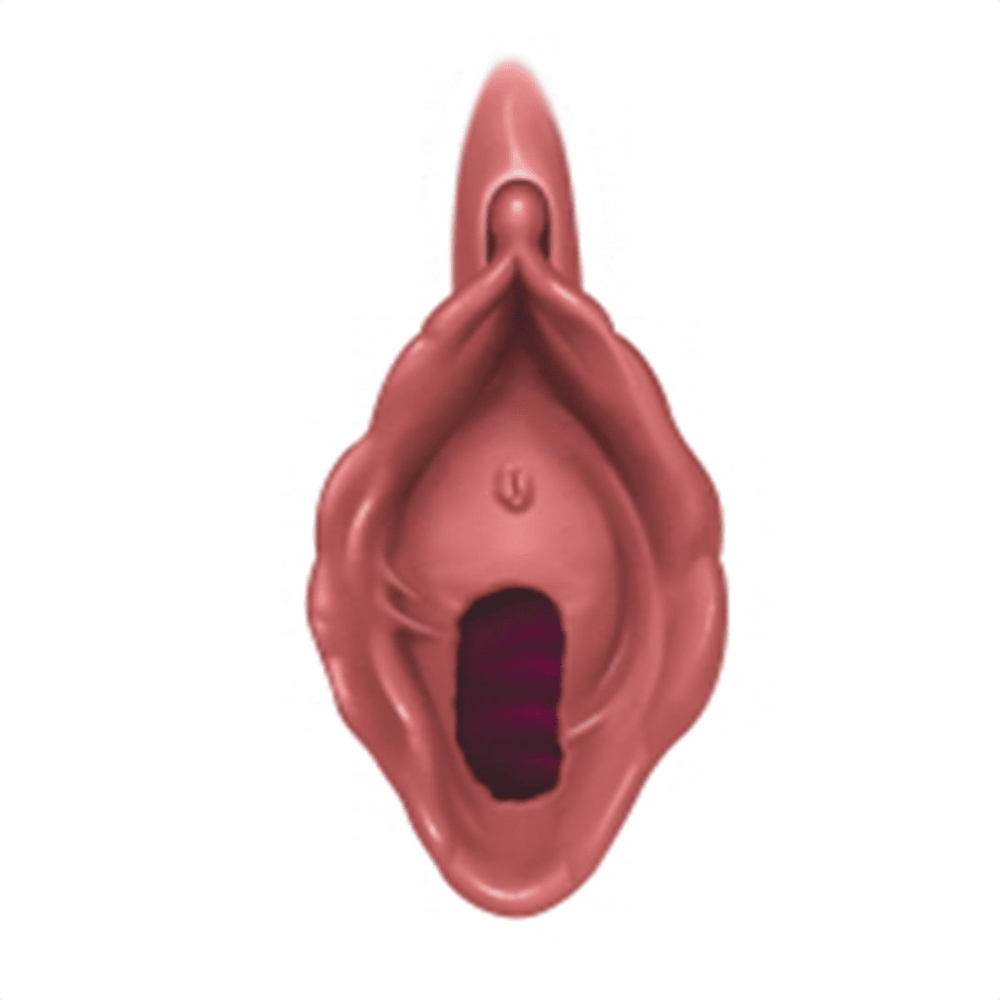
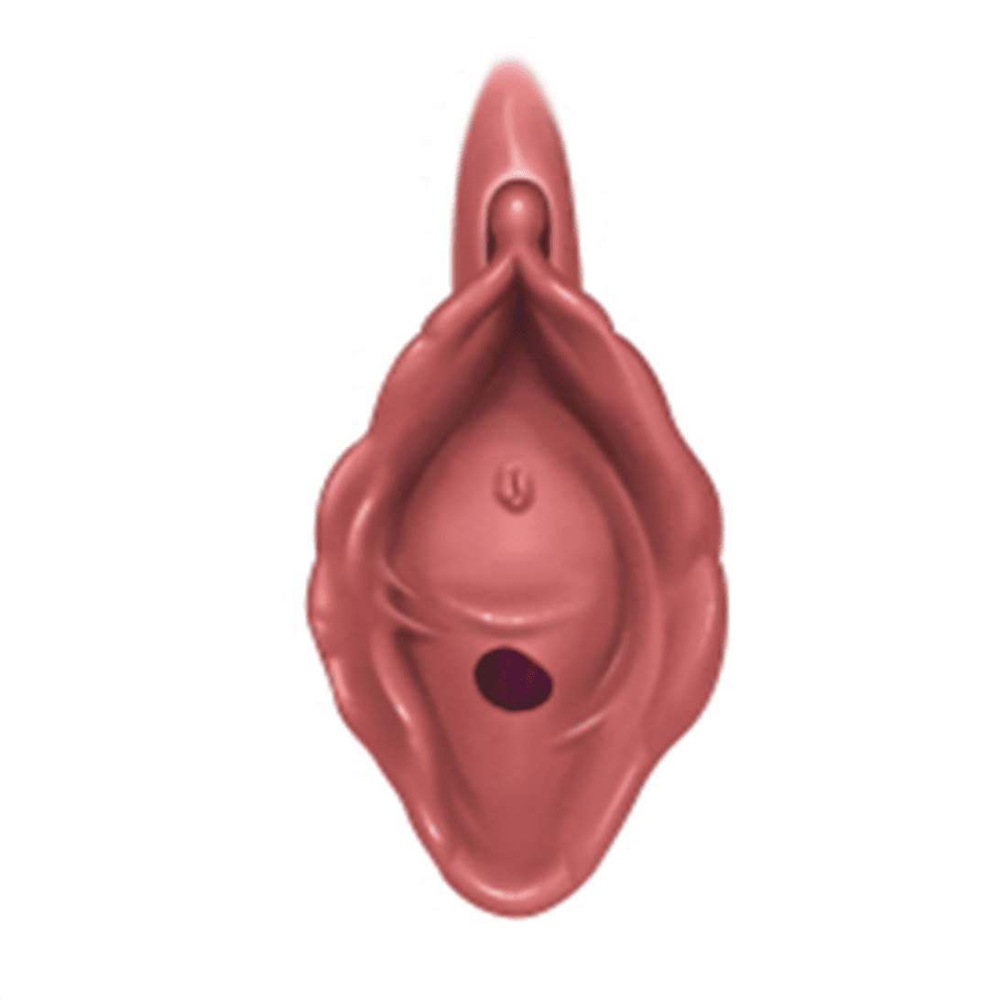

나를 위한 처녀막 재생술
나를위한 산부인과의
“처녀막 재생술”
은
의료진의 노히우와 기술력으로
여성의 자존감을 높이며
행복한 가정을 일구는 데 도움 되는 가치 있는 수술입니다
- 수술시간 30분 내외
- 실밥제거 없음
- 회복기간 5일
- 입원여부 없음
- 마취방법 국소마취
여성의 처녀막이란
처녀막은 질 입구를 둘러싼 주름 조직의 일부로,
이 주름 사이에 지름이 약 2cm정도의 구멍이 뚫려있어
이 사이로 한 달에 한번씩 생리 혈이 나오게 되는 것입니다.
이러한 구멍을 처녀막공이라고 하는데 그 형태는
사람마다 달라 원형, 칸막이형, 다공형 등이 있으며
처녀막 주름이 너무 발육된 경우에는 출생 후에도
구멍이 없는 미천공형의 형태를 보이기도 합니다.
이를 의학적으로 '처녀막 폐쇄' 라고 하는데,
이렇게 되면 생리를 배출하지 못해 수술을 해야 할 지경에 이릅니다.
일반적으로 처녀막은 처음 성교할 때 파열되지만,
진짜로 찢어진다는 것보다
그 구멍이
많이 늘어난 형태를 보이는 것이 대부분입니다.
또한 처녀막 자체가 매우 약한 조직이라
성교 이외의 상황에서도 파열되는 수가 있는데,
과격한 운동이나 자전거타기, 승마, 심한 애무
(손가락을 질속으로 집어 넣는 것)등으로 파열될 수 있습니다.
원래 처녀막은 볼펜이 겨우 들어갈 만한 크기이므로
처음 남성의 성기가 삽입될 때는
이러한 처녀막이 찢어져서 출혈이 나게 되는 것입니다.
다양한 처녀막 형태
-

-

-

나를위한 산부인과
처녀막 재생술
처녀막 재생수술은 손상된 처녀막을
손상 전의 상태로 복원시킨 다음
첫 잠자리 시에
출혈이 나오는 형태로 교정
시켜 주는 것을 말하는데
단순히 잠자리에서 출혈만 나오게 하는 혈흔수술과
처녀막의 복원 수술 등의 종류가 있습니다.
처녀막 복원 성형은 수술방법, 정도,
손상상태나 질 내부 상태 및 시기 등에 따라
진찰 수를 결정하게 되며,
파열된 처녀막을 원형으로 복구한 후
월경이 나오도록 작은 구멍만 남긴 후 봉합을 하게 됩니다.
다만 수술의 중요한 사항은 성 관계 시 출혈이 일어나게 하는 것이지만
복원된 처녀막은 혈관이 없을 수 있으므로
출혈이 일어나지 않을 수도 있습니다.
처녀막 재생술 대상자
-
결혼을 앞두고 처녀막 손상이 고민되는 경우
-
첫 관계나 결혼 전
심리적으로 당당해지고 싶은 경우 -
출혈을 동반한 처녀막 복원을 원하는 경우
-
선천적으로 처녀막이 없는 경우
-
첫 관계의 설렘을 다시 느껴보고 싶은 경우
-
성관계가 아닌 다른 원인에 의해
처녀막이 파열된 경우

프라이빗한 휴식 과 회복
나를위한산부인과에서는 치료를 받는
환자분들이
긴장을 완화하고 편안한
마음으로 쉬실 수 있도록
고급스럽고
편안한 분위기의 1인 회복실을 제공합니다.
처녀막 재생술
후 주의사항
시술 후 주의 사항은 개인 차가 있을 수 있습니다.
-
01
수술 후 일상생활은 가능하지만 무리한 운동은 자제하는 것이 좋습니다.
-
02
수술 직후 식사가 가능하며, 수술 이후 음식은 가릴 필요가 없지만,
음주나 흡연은 금하시는 것이 좋습니다. -
03
수술 후 처방 드린 약은 반드시 챙겨 드셔야 합니다.
-
04
수술당일부터 샤워는 가능하나 탕 목욕은 일주일 정도 삼가시는 것이 좋습니다.
-
05
출혈은 개인에 따라 다르지만 심한 경우 반드시 내원해주세요.